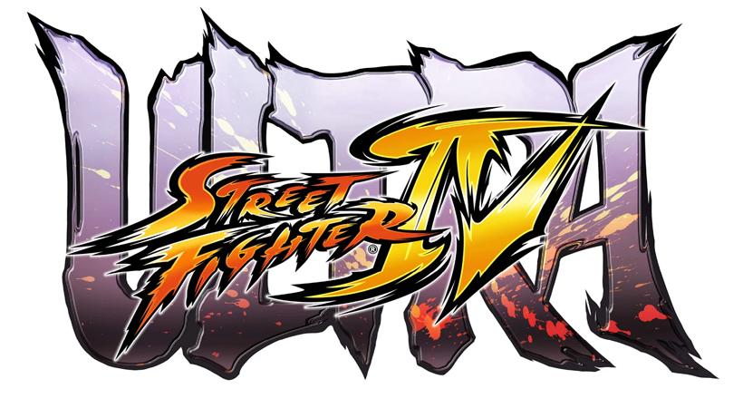
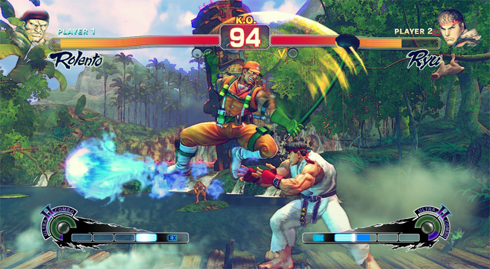
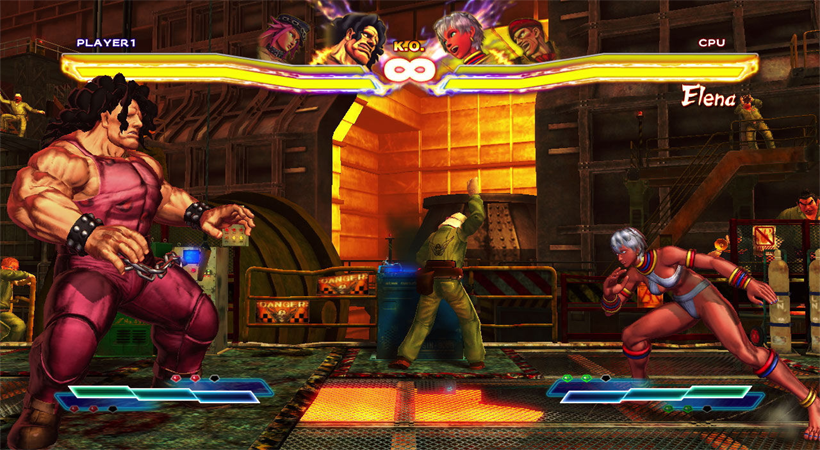

Thousand of Games


Ultra Street Fighter IV Free Download
Ultra Street Fighter IV Free Download PC game Setup single link for Windows. It is a fighting game which mainly focuses on street fighting.
Ultra Street Fighter IV Overview
Ultra Street Fighter IV PC Game is developed and published by Capcom. This is a very interesting game where the player’s main focus is to fight against his enemies using easiest controls ever. Special moves have been introduced in the game. Where player can choose any weapon of his own choice from a large number of different variety weapons. Player can also choose his own character as each character has some special tactics and skills. Which will help the player to fight. Another very interesting and important feature that has been added to Ultra Street Fighter is Focus attacks. Which means that the player can absorb any attack on him from his enemies and can hit the other person at the same time.

Features of Ultra Street Fighter IV
i) New characters have been added with his own skills
ii) Dynamic environment has been added
iii) Different new costumes added for the player character
iv) Different latest weapons introduced

System Requirements of Ultra Street Fighter IV
Before you start Ultra Street Fighter IV make sure your PC meets minimum system requirements.
i) Tested on Windows 7 64-Bit
ii) Operating System: Windows Vista/7/8/8.1/10
iii) CPU: Intel i3 6300 @ 3.8GHz or AMD FX 8150 @ 3.6GHz with 4 hardware threads
iv) RAM: 2GB
v) Setup Size: 8GB
vi) Hard Disk Space: 12GB

Ultra Street Fighter IV Free Download PC
Click on the below button to start Ultra Street Fighter IV. It is full and complete game. Just download and start playing it. We have provided direct link full setup of the game.

© Copyright Thousandofgame.com 2018
Go to Top